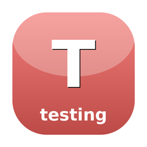

SugarTesting
Test harness for SugarCraft programs

The test harness for SugarCraft programs. ProgramSimulator drives a TEA Model with scripted messages and records what it rendered, Assertions and GoldenFile pin the output as byte-exact snapshots, Graphics decodes inline-image streams back to pixels, and TapeRecorder writes VHS .tape scripts for demos. It is an original SugarCraft design, inspired by the Go teatest and golden-file prior art cited under Upstream mapping.
Install
composer require --dev sugarcraft/sugar-testing:@devThis is a PHPUnit test harness. It belongs in require-dev and must not enter runtime dependencies. It needs PHP 8.3 or newer, sugarcraft/sugar-core, sugarcraft/sugar-cellbuffer and react/event-loop. ext-gd is optional and only needed to materialize pixels in the graphics assertions.
Quickstart
This block is self-contained. The inline counter stands in for a real app's Model, which a real suite would hand to the simulator instead.
use SugarCraft\Core\Msg;
use SugarCraft\Core\Msg\KeyMsg;
use SugarCraft\Testing\Input\ScriptedInput;
use SugarCraft\Testing\ProgramSimulator;
use SugarCraft\Testing\Snapshot\Assertions;
use SugarCraft\Testing\Snapshot\GoldenFile;
// The smallest drivable counter — inline so this block is self-contained.
// A real suite hands the simulator its own app's Model (or Program).
$counter = new class implements \SugarCraft\Core\Model {
public function __construct(private int $count = 0)
{
}
public function init(): ?\Closure
{
return null;
}
public function update(Msg $msg): array
{
if ($msg instanceof KeyMsg && $msg->rune === 'a') {
return [new self($this->count + 1), null];
}
return [$this, null];
}
public function view(): string
{
return 'count: ' . $this->count;
}
public function subscriptions(): ?\SugarCraft\Core\Subscriptions
{
return null;
}
};
$result = ProgramSimulator::for($counter)
->addMsgs(...ScriptedInput::new()->key('a')->key('q')->build())
->run();
// Real suites COMMIT the golden file; a missing golden then fails loudly (see
// Assertions). The guarded save() below just stands in for that first seeding.
$golden = sys_get_temp_dir() . '/sugar-testing-quickstart.golden';
if (GoldenFile::load($golden) === null) {
GoldenFile::save($golden, $result->view);
}
Assertions::assertGoldenAnsi($golden, $result->view);Concepts
A SugarCraft program is a Model with init(), update(Msg): [Model, ?Cmd] and view(). ProgramSimulator runs that loop without a terminal: it queues the messages you send, feeds each one through update(), renders view() after every step, and returns a TestResult. Commands are either executed (the default) or captured with withRealCmdRunner(false) so a test can assert that a command was produced without running it.
Input is modeled as messages, not bytes. ScriptedInput builds the same KeyMsg, MouseMsg, ResizeMsg and paste messages a live session produces. When a test needs the real byte path, ScriptedInput::bytes() runs raw terminal input through sugar-core's InputReader.
Snapshots are create-only. A golden file is written once, from a deliberate seeding run, and a later mismatch fails loudly without rewriting the file. To re-baseline, delete the golden and rerun with the update variable set. The same rule applies to the TapeRecorder output: it is generated, never hand-edited.
Tasks
- Pin a rendered screen. Drive the model with
ScriptedInput, then callAssertions::assertGoldenAnsi($golden, $result->view)against a committed golden underfixtures/. - Check that a key produced a command. Build the simulator with
withRealCmdRunner(false), send the key, then call$result->assertCmdCount(1)orassertCmdContains()on the captured list. - Catch render-time mutation. Call
Assertions::assertViewIdempotent($model). A secondview()must return identical bytes. - Test a paste exactly as the runtime sees it. Use
ScriptedInput::new()->paste($text). Pasted payloads are sanitized by default, andwithSanitizePaste(false)delivers them verbatim. - Assert an inline image. Feed a captured Kitty, Sixel or iTerm2 stream to
GraphicsAssertions::assertRendersTo()with the expectedPixelGrid, or toassertProtocolRoundTrip()to check that decode and re-encode agree. - Script a demo. Open a
TapeRecorder::to($path), addheader(),type(),enter()andsleep()directives, then callsave(). CI renders the resulting tape.
API reference
The classes below are the public surface. Each block lists the methods a test typically calls. The full signature table follows the blocks.
ProgramSimulator
false to capture Cmds without executing them. The fake runner decides the message injected for each Cmd, and execution is otherwise unchanged.TestResult with the model, last view, captured cmds, output and frames. Subscription output is delivered right after the message that triggered it. Messages still queued when a QuitMsg or InterruptMsg halts the drain are skipped and counted in droppedAfterStop. run() can be called again.WindowSizeMsg, EnvMsg and ColorProfileMsg exactly as a real Program dispatches them, before init(). Each returns a clone.ScriptedInput
build() returns the list, ready to splat into send().InputReader, one argument per read. Reads are split into 4096-byte chunks like the runtime. Afterwards the runtime's idle recovery applies: a lone ESC becomes an Escape key, and an unterminated paste is closed.bytes(), so the model sees the same PasteStartMsg, PasteEndMsg and PasteMsg sequence as at runtime. Longer pastes arrive in several PasteMsg chunks.false to deliver them verbatim. Call it before bytes().Assertions and GoldenFile
SUGAR_TESTING_UPDATE_GOLDENS=1 to create a missing golden. Creation is one-way, and a mismatch never rewrites the file.view() must return identical bytes. The model-unchanged leg uses a shallow clone, so nested mutation by reference is out of its reach. Output idempotence is the guarantee.load() returns null only for a missing file, and unreadable or symlinked goldens throw. create() refuses an existing golden, update() is the deliberate re-baseline, and resolve() keeps fixture paths inside fixtures/.Graphics stream assertions
assertRendersTo() decodes a protocol byte stream and compares it to a pixel grid. assertInlineImageDimensions() checks placement and size. assertProtocolRoundTrip() re-encodes what it decoded. renderGrid() exposes the grid directly.KittyImage (PNG payload, placements, z-index), a sixel raster (width, height, palette, grid), and iTerm2 file keys.fromRgbGrid() and transparent(). uniformColor() and toGdImage() are the escape hatches, and the latter needs ext-gd.MalformedGraphicsException.TapeRecorder
save() writes the tape to that path.Set directives and the choreography lines. Typed text is escaped, so it can never forge a standalone directive line.# comment directives. line() appends one raw directive verbatim..tape file. Nothing is captured from a running program, and there is no playback API.Type syntax, or returns null when unsupported, so scripted sessions turn into directives.Full signature table
| Class | Method | Description |
|---|---|---|
| ProgramSimulator | for(Model|Program): self | Factory: wrap a Program or a bare Model |
| ProgramSimulator | send(Msg ...$msgs): self | Fluent message enqueue |
| ProgramSimulator | withRealCmdRunner(bool): self | Pass false to capture Cmds without executing them (the default executes) |
| ProgramSimulator | withFakeCmdRunner(\Closure $runner): self | Per-Cmd injected-message hook (execution unchanged) |
| ProgramSimulator | run(): TestResult | Drain queue, return result |
| ProgramSimulator | withWindowSize(int cols, int rows): self | Arm the startup WindowSizeMsg (dispatched before init(), like Program) |
| ProgramSimulator | withEnvironment(array vars): self | Arm the startup EnvMsg (dispatched before init(), like Program) |
| ProgramSimulator | withColorProfile(ColorProfile): self | Arm the startup ColorProfileMsg — the message color vetoes key off |
| ScriptedInput | new() / key(char, shift:, ctrl:, alt:) / namedKey(KeyType, rune, shift:, ctrl:, alt:) / enter() / arrow(dir, shift:, ctrl:, alt:) / escape() / backspace() / tab() / quit() / ticks(count, seconds:, factory:) / resize(cols, rows) / mouse(button, action, x, y) / wheel(button, x, y) / push(Msg) / paste(string) / bytes(string ...$reads) / clipboard(string, selection:) / keyboardEnhancements(flags) / withSanitizePaste(bool) / build(): list<Msg> | Scripted terminal input — the key builders take optional modifier flags; paste payloads are sanitized by default, as at runtime |
| ScriptedInput | count(): int; constants READ_SIZE, PASTE_START, PASTE_END | Queued message count; the 4096-byte read chunk size and bracketed-paste sentinels |
| TestResult | model: object | Final model after all messages |
| TestResult | view: string | Last view() output |
| TestResult | cmds: list<Closure> | Captured commands |
| TestResult | output: string | Concatenated view() output across the run plus RawMsg/PrintMsg side-channel writes |
| TestResult | frames: list<string> | Every view() render, in order |
| TestResult | droppedAfterStop: int | Messages skipped when a QuitMsg/InterruptMsg ended the drain early |
| TestResult | assertCmdCount(int): void / assertCmdContains(callable, ?string): void / assertNoCmds(): void | Cmd-list assertions; failure messages name how many cmds were captured |
| Assertions | assertGoldenAnsi(string, string): void | Golden file snapshot assertion |
| Assertions | assertCellGrid(array, Buffer): void | Cell-by-cell buffer comparison |
| Assertions | assertAnsiEquals(string, string): void | Byte-exact ANSI diff |
| Assertions | assertViewIdempotent(Model): void | Render-purity check — view() twice must return identical bytes |
| GoldenFile | load(string): ?string | Load golden file contents |
| GoldenFile | save(string, string): void | Save golden file |
| GoldenFile | create(string, string): void | One-time seed write; refuses an existing golden (no-clobber enforced by link semantics) |
| GoldenFile | update(string, string): void | Deliberate overwrite — the re-baseline path, stated as intent |
| GoldenFile | resolve(string baseDir, string relative): string | Absolute path inside baseDir/fixtures; refuses traversal out of the fixtures base |
| TapeRecorder | to(string): self | Factory: start composing the tape saved to that path |
| TapeRecorder | header(...): self | Emit the VHS Set directives |
| TapeRecorder | type(string): self | Append a Type directive (escaped) |
| TapeRecorder | enter(): self | Append an Enter directive |
| TapeRecorder | sleep(float): self | Append a Sleep directive |
| TapeRecorder | save(): void | Write .tape file |
| TapeRecorder | resize(int cols, int rows): self / comment(string): self / line(string): self | Resize and #comment directives; line() appends one raw directive verbatim |
| TapeRecorder | keyMsgToVhs(KeyMsg): ?string | Static: map a decoded key back to VHS Type syntax, null when unsupported |
| Graphics\GraphicsAssertions | assertRendersTo(string, Mode, PixelGrid|array, int tolerance = 0, string message = ''): void | Static: decode an inline-image stream and compare it to the expected pixels |
| Graphics\GraphicsAssertions | assertInlineImageDimensions(string, Mode, ?int, ?int): void / assertProtocolRoundTrip(string, Mode): void / renderGrid(string, Mode): PixelGrid | Static: dimension checks, decode/re-encode round trip, direct grid access |
| Graphics\Mode | enum Sixel | Kitty | Iterm2; detect(string): self | Which inline-image protocol a byte stream speaks |
| Graphics\KittyStream | decode(string): self; images(): array; image(): KittyImage; count(): int; id() / action() / cols() / rows() / png() | kitty graphics parser — one or more images carried on the stream |
| Graphics\KittyImage | png(): string / cols() / rows() / action() / id() / number() / zIndex() / format() / compressed() / pixelDimensions(): array / toGdImage() | Decoded kitty image: PNG payload plus placement and encoding metadata |
| Graphics\SixelStream | decode(string): self; width() / height(): int / palette(): array / grid(): PixelGrid / pixel(int, int): ?array / toGdImage() | Sixel raster decoder |
| Graphics\Iterm2Stream | decode(string): self; command(): string / params(): array / payload(): string / hasPayload(): bool / png(): string / cellsWidth() / cellsHeight(): ?int / toGdImage() | iTerm2 inline-file (OSC 1337) decoder |
| Graphics\PixelGrid | fromRgbGrid(array): self / transparent(int, int): self; pixel(int, int): ?array / paintedPixels(): array / uniformColor(): ?array / toGdImage() | RGBA comparison grid; toGdImage() requires ext-gd |
| Graphics\DecodeLimits | MAX_RASTER_CELLS / MAX_NUMBER_DIGITS / MAX_DECOMPRESSED_BYTES / MAX_IMAGE_PIXELS; assertMaterializablePng(string, string): void | Hostile-input caps shared by the decoders; PNG materialization guard |
| Graphics\MalformedGraphicsException | extends RuntimeException | Thrown by all three decoders and the limit guards on malformed or over-cap streams |
| LoopPin | pinStableClock(): LoopInterface | Static: stop and replace the shared loop so arm-time deadlines compute correctly; process-wide (see README caveats) |
| LoopPin | hasStaleClockRisk(LoopInterface): bool | Static: fail-closed check — StreamSelectLoop is safe; extension-backed and unknown loops are reported at risk |
| TemporaryDirectoryTrait | setUpTemporaryDirectory() / tearDownTemporaryDirectory() / tempDirPrefix() | Protected trait: a private 0700 scratch directory under the system temp dir, created in setUp and removed in tearDown |
Configuration and options
| Option | Type | Default | Effect |
|---|---|---|---|
SUGAR_TESTING_UPDATE_GOLDENS | env, 1 to arm | unset | Creates a missing golden on the next assertGoldenAnsi() run. It never rewrites an existing golden. |
UPDATE_GOLDENS | env, 1 to arm | unset | Deprecated legacy alias of the variable above. It is read until the alias is dropped. |
ProgramSimulator::withWindowSize() | int, int | none | Arms the startup WindowSizeMsg, dispatched before init(). |
ProgramSimulator::withEnvironment() | array | none | Arms the startup EnvMsg with the given variables. |
ProgramSimulator::withColorProfile() | ColorProfile | none | Arms the startup ColorProfileMsg, the message that color vetoes read. |
ProgramSimulator::withRealCmdRunner() | bool | true | Pass false to capture Cmds without executing them. |
ScriptedInput::withSanitizePaste() | bool | true | Sanitizes paste payloads as at runtime. Set before bytes(). |
TestResult::droppedAfterStop | int | computed | Count of messages skipped after a QuitMsg or InterruptMsg ended the drain. |
Keys and input
The harness has no keymap of its own. A key is a KeyMsg built by ScriptedInput, so the keys a test sends are exactly the keys the model's update() matches. Use key('a', ctrl: true) for modifiers, namedKey() or arrow() for special keys, escape(), backspace(), tab() and quit() as shortcuts, and mouse() and wheel() for pointer input. TestResult::assertCmdCount() and assertNoCmds() check what a key produced.
Theme and color profile
The harness does not style output or define a theme. Themes belong to the model under test. What the harness controls is the color profile the model sees. withColorProfile() arms the startup ColorProfileMsg, so a golden captured under one profile can be reproduced exactly. Pin the profile in every snapshot test that renders color, because the same model emits different SGR bytes under a different profile.
Examples
Both examples run without a terminal and need only composer install in the lib root.
examples/program-simulator.php: drives an inline counter withScriptedInput, prints the final view, the frame count and the captured command count. Run it withphp examples/program-simulator.php.examples/tape-recorder.php: builds a VHS tape, prints it, and removes the temporary file it wrote. Run it withphp examples/tape-recorder.php. The output includes an escapedTypeline, which shows how typed control bytes are handled.
Testing
Run the lib's own suite from its root:
composer install && vendor/bin/phpunitThe suite tests the harness through the same Model contract it simulates. Its fixtures, such as CounterModel and ControlRecorderModel, are small TEA models. tests/bootstrap.php calls LoopPin::pinStableClock() before anything else. Under ext-uv, deadlines are computed against a clock refreshed once per loop iteration, so a timer armed after synchronous idle would already be overdue.
In your own suite, call LoopPin::pinStableClock() from your bootstrap when your tests bound waits with timers on Loop::get(). Use ProgramSimulator for the model and Assertions::assertGoldenAnsi() for the output, and commit the goldens under fixtures/.
Troubleshooting and FAQ
- The golden is missing and the test fails with "No golden file found". Seed it once with
SUGAR_TESTING_UPDATE_GOLDENS=1and commit the new file. Creation is one-way, so a golden that already exists is never rewritten by this variable. - The output changed, the test fails with "Golden file mismatch", and you want the new output. Delete the golden, rerun with the variable set, and review the diff in version control. Do not edit the golden by hand.
- A timer-based wait times out or fires early on a developer machine. The loop clock is stale. Call
LoopPin::pinStableClock()first in the bootstrap.LoopPin::hasStaleClockRisk()reports whether the current loop is at risk. toGdImage()throws in a graphics test. Pixel materialization needs ext-gd. Install the extension, or stay on the stream-level checks such asassertProtocolRoundTrip(), which work without it.assertViewIdempotent()passes but a nested object still changed. The model-unchanged leg uses a shallow clone. The check guarantees identical output on a second render, not deep state purity. Keep render methods free of nested mutation by convention.- A message queued after
QuitMsgnever reachedupdate(). That is intended. The drain stops at the quit, and the skipped count is inTestResult::droppedAfterStop.
Upstream mapping
There is no one-to-one port. The table maps the Go prior art named in the lib's README credits to the SugarCraft classes that take their place.
| Upstream (Go) | SugarCraft class | Notes |
|---|---|---|
charmbracelet/teatest | ProgramSimulator, ScriptedInput, TestResult | Drives a model with scripted messages and captures the final output. The dispatch table mirrors Program::dispatch(), and divergences are named in the README. |
charmbracelet/x/exp/golden | Assertions::assertGoldenAnsi(), GoldenFile | Golden-file snapshots. SugarCraft makes the lifecycle explicit with create-only seeding and a separate re-baseline path. |
| VHS demo scripts | TapeRecorder | Builds .tape files. CI renders them into GIFs, and the render step lives in candy-vcr rather than upstream VHS. |
Architecture
Five parts sit side by side. ProgramSimulator and ScriptedInput form the TEA runner. Assertions and GoldenFile form the snapshot layer, which rejects malformed expectation shapes before comparing. The Graphics namespace decodes Kitty, Sixel and iTerm2 streams into a PixelGrid, with DecodeLimits capping hostile input at every allocation. TapeRecorder is a standalone builder for demo scripts. LoopPin replaces the shared ReactPHP loop with StreamSelectLoop so that timer deadlines are computed at arm time. The simulator's dispatch table is an explicit mirror of Program::dispatch(), and the README's "Simulation subset" section is the contract for that mirror.
Changelog and versioning
The package ships no CHANGELOG file. The commit history of sugar-testing/ in the monorepo is the record of changes. The install line above pins the development branch with @dev, so pin a tagged release in your own manifest once one is published.
Related
- sugar-core: the
Model,MsgandProgramcontract the simulator drives. - sugar-cellbuffer: the
Bufferthat cell-grid assertions compare. - sugar-image: consumes the
Graphicsassertions in its renderer tests. - The
sugarcraft/sugar-testingpackage is required inrequire-devby 25 sibling packages, so changes here reach most suites.